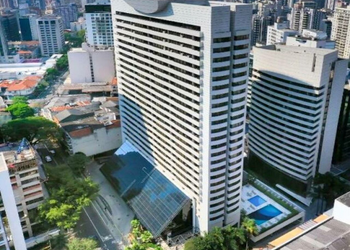

Golden Tulip Paulista Plaza

- Alameda Santos, 85 - Jardins, São Paulo - SP
- A partir de R$ 276,00
- 4.4 estrelas
- 3,2km da Av. Paulista
- radisson.com.br
Localizado no centro financeiro e comercial de São Paulo, o Golden Tulip Paulista Plaza ou Radisson Hotel Paulista São Paulo dispõe de piscina ao ar livre e Wi-Fi gratuito em todas as áreas. Espaçosos e decorados em estilo moderno, com móveis de madeira, os quartos incluem ar-condicionado, mesa de trabalho, TV de tela plana a cabo e muito mais. O Golden Tulip Paulista Plaza também oferece instalações empresariais eficientes, salas de reuniões e academia bem equipada. Além disso, a equipe fala inglês e japonês e está à disposição 24 horas.
- Sesc Avenida Paulista
- Japan House
- Centro Cultural de São Paulo
- Bienal de São Paulo - Pavilhão Ciccillo Matarazzo
- Edifício Copan